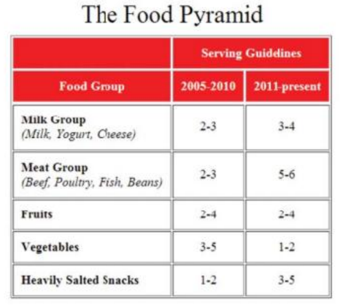
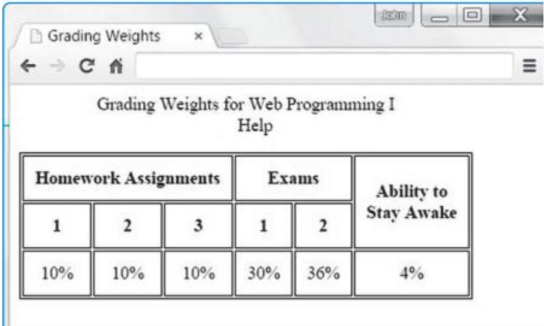

| c | Write a note on iframe element in HTML5 . | L-2 | 5 | |
| Module-3 | ||||
| Q. 05 | a | Explain the different levels of Style Sheets are available in Cascading Style Sheets. | L-2 | 6 |
| b | With an example, Explain various Selector Forms . | L-2 | 8 | |
| c | Explain span and div elements with an example. | L-2 | 6 | |
| OR | ||||
| Q. 06 | a | With a example, Explain BOX, padding and margin properties in CSS | L-2 | 8 |
| b | Explain different types of Text properties available in CSS. | L-2 | 6 | |
| c | Explain various Color Properties used in style sheets | L-2 | 6 | |
| Module-4 | ||||
| Q. 07 | a | Create a HTML5 document for the following screenshot.  |
L-6 | 8 |
| b | Explain how a responsive web page’s layout can display differently on different platform | L-2 | 6 | |
| c | With an example explain how to link a Specified Location Within a Different Web Page in HTML5 | L-2 | 6 | |
| OR | ||||
| Q. 8 | a | Create a HTML5 document for the following screenshot.  |
L-6 | 8 |
| b | Explain how images are inserted in html document with an example. | L-2 | 6 | |
| c | Write a note on Shortcut Icons and iframe Element with example. | L-2 | 6 | |
| Module-5 | ||||
| Q. 9 | a | Develop a JavaScript program to print Hello World message using Function. | L-6 | 6 |
| b | Explain how forms are processed in Client side and server side | L-2 | 6 | |
| c | Explain how to Access a Form’s Control Values with an example. | |||
| OR | ||||
| q. 10 | a | Write a note on :Document Object Model | L-2 | 6 |
| b | Develop a JavaScript code that displays text “HTML5” with increasing font size in the interval of 100ms in RED COLOR, when the font size reaches 50pt it displays “HTML” in BLUE color. Then the font size decreases to 5pt. | L-6 | 8 | |
| c | Explain popular controls and the elements of forms used JavaScript | L-2 | 6 | |